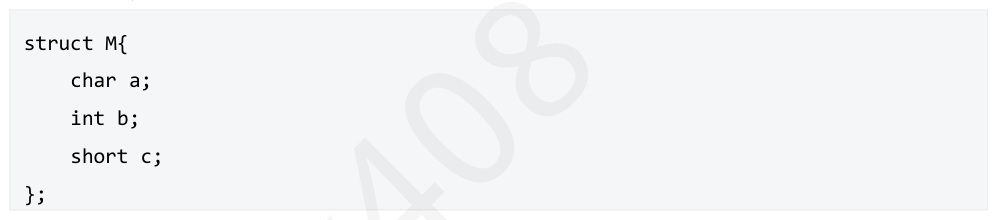
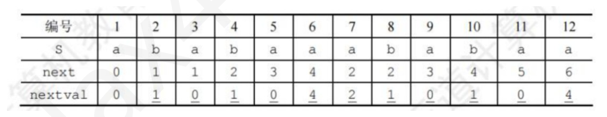
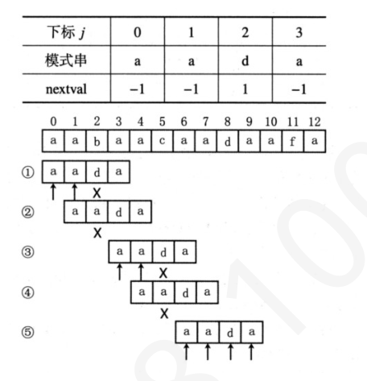

第 31 题
已知循环队列存储在数组A[m]中，length 表示循环队列中的元素个数，front 指向队首元素， rear 指向队尾元素，则front 所在位置应该是（ ）。
- A．rear -length
- B．(rear - length + m)% m
- C．(rear+m+1-length)% m
- D．(rear + length -1)% m
答案与解析
答案：C
由题给出条件可得队首在rear-(length-1)的位置(因为rear占一个位置)，由于减法可能结果为负数，考虑到循环特性，需要加上m再对m取模。或特殊值法：取m=3，length=2， rear=0，则此时front 在2 的位置，带入计算，C 满足条件。
第 32 题
下列叙述中正确的是（ ）
- A．在栈中，栈顶指针的动态变化决定栈中元素的个数
- B．在循环队列中，队尾指针的动态变化决定队列的长度
- C．在循环链表中，头指针和链尾指针的动态变化决定链表的长度
- D．在线性链表中，头指针和链尾指针的动态变化决定链表的长度
答案与解析
答案：A
在栈中，栈底指针保持不变，有元素入栈，栈顶指名增加，有元素出栈，栈顶指针减少。在循环队列中，队头指针和队尾指针的动态变化决定队列的长度。在循环链表中，前一个结点指向后一个结点，而最后一个结点指向头结点，只有头结点是固定的。线性链表中，由于前一个结点包含下一个结点的指针，尾结点指针为空，要插入或删除元素，只需要改变相应位置的结点指针即可，头指针和尾指针无法决定链表长度。故本题答案为A选项。
第 33 题
一个队列只能从右侧入队，左右侧皆可出队。顺序为Ka、Kb、Kc、Kd、Ke 的序列入队后，不能得到的输出是（）
- A．Ka->Kb->Kc->Kd->Ke
- B．Ke->Kd->Kc->Kb->Ka
- C．Ka->Kb->Ke->Kc->Kd
- D．Ke->Ka->Kc->Kb->Kd
答案与解析
答案：D
选项A 可以进一个出一个，右侧入队，左侧或右侧出队，Ka、Kb、Kc、Kd、Ke每个进出完再继续下一个入队。选项B 可以所有的进去之后再依次出去，Ka，Kb，Kc，Kd，Ke依次右侧进入，再依次右侧出来，类似于栈。选项C 可以先Ka，Kb 都右侧进，左或右侧出；Kc，Kd，Ke依次进，Ke右侧出，Kc左侧出， Kd左右均可出选项D 无法得出这个序列。
第 34 题
若某队列允许在其两端进行入队操作，但仅允许在一端进行出队操作，允许入队出队操作交替进行。若入队序列为a,b,c,d,e，则下列出队序列中，可能得到的有（ ） I．b,a,c,d,eII．d,b,a,c,eIII．d,b,c,a,eIV．b,c,a,d,e
- A．I、II、IV
- B．III、IV
- C．I、II
- D．II、IV
答案与解析
答案：A
如果题目改成所有元素依次入队后再进行入队操作（一次性出队）（10年真题），则III、IV不可能得到。但是本题是可以中间出队的，想必I、II、III 大家都没问题。对于IV （假设只能右侧出队）：
①a 左入，b 右入得ab，b 出队（b）
②c 右入得ac，c 出a 出（bca）
③d 左入，e 右入，e 出d 出（bcade）
第 35 题
设一个输入序列为a,b,c,d，借助一个输出受限的双向队列，所得到的输出序列不可能是（ ）
- A．d,a,c,b
- B．c,a,d,b
- C．a,b,c,d
- D．b,d,a,c
答案与解析
答案：A
A 选项错误，d 第一个输入，那么此时队列里面还剩abc，由于输入在两端都可以进行，且三个元素是按abc 依次输入，那么a、b 一定相邻，即acb 一定不可能出现，A 错误。 B 选项正确，假设只能左边出，进出队列如下：a 左边入队得到a；b 右边入队得到ab；c 左边入队得到cab；c 出队，得到ab；a 出队，得到bc；d 左边入队，得到db，再依次出队d，b，得到答案B； C 选项显然正确；对于D 选项：a 左入队，得a；b 左边入队得ba；b 出队，得a；c 右边入队，得ac；d 左边入队，得dac；再依次出dac，D 选项正确；
第 36 题
在输入受限的双端队列中，输入序列是1，2，...，n，输出序列是𝑃1, 𝑃2, 𝑃3, 𝑃4，若𝑃1= 𝑛,𝑃2的取值有（）种
- A．n-1
- B．n-2
- C．2
- D．1
答案与解析
答案：C
输入受限的双端队列，当𝑃1= 𝑛, 𝑃2的可能取值只可能是1 和n-1 两种情况。
第 37 题
有一个队列Q 和一个栈S，已知入栈和入队的顺序都是1,2,3,....,n(n>6)，出栈或出队操作可以在任意一次入栈或入队或发生，则下列说法错误的是（）
- A．任何情况下出队的顺序都为1,2,3,......,n
- B．如果第一个出栈的数字是n-2，则第二个出栈的数字可能是n
- C．如果第一个出栈的数字是n-3，则第三个出栈的数字可能是n-6
- D．如果第一个出栈的数字是n-3，则第三个出栈的数字可能是n-4
答案与解析
答案：C
入队顺序和出队顺序一定一样，所以A 正确。第一个出栈是n-2，说明此时1 到n-2 都已经入栈，只需要再入栈n-1 和n 再出栈n 即可满足B 的情况。第一个出栈是n-3，则1 到n-3 都已经出栈，此时n-3 出栈后，再入栈n-2 再出栈，随后出栈n-4 即可满足D 的情况，但是无论如何都不可能使n-6 第三个出栈，C 错误。
第 38 题
下列关于栈的说法错误的是（ ）。
- A．可以使用两个队列实现一个后入先出的栈
- B．可以使用一个队列实现一个后入先出的栈
- C．可以使用两个栈实现先入先出队列
- D．可以使用一个栈实现先入先出队列
答案与解析
答案：D
A正确，使用两个队列实现栈时，一个用于存储栈内的元素，一个用于出栈操作的辅助队列push（）时，新元素在非空队列中入队；pop（）时，将元素逐个出队再入队到另一个队列，至原队列只剩最后一个元素时，将该元素出队，完成pop（）操作。 B正确，使用一个队列模拟栈，需要满足队列前端元素是最后入栈的元素。push（）时，首先将新元素入队，再将队列其他元素逐个出队再入队，这样可以使得新元素处于队首，模拟栈的功能。 C正确，将栈stack1 当作输入栈，存储push（）传入的数据；栈stack2 当作输出栈，用于pop （）和push（）操作。每次pop（）或push（）时，若输出栈为空则将输入栈的全部数据依次弹出并压入输出栈，这样输出栈从栈顶往栈底的顺序就是队列从队首往队尾的顺序。 D错误，不能够实现该要求。
第 39 题
设栈S 和队列Q 的初始状态为空，元素e1-e6 依次通过栈S，一个元素出栈后即入队列Q，若6 个元素出队的序列是e2、e4、e3、e6、e5、e1，则栈S 的容量至少应该是（ ）
- A．5
- B．4
- C．3
- D．2
答案与解析
答案：C
操作过程如下：e1 进栈，e2 进栈，e2 出栈后进队，e3 进栈，e4 进栈，e4 出栈后进队，e3 出栈后进队，e5 进栈，e6 进栈，e6 出栈后进队，e5 出栈后进队，e1 出栈后进队，栈中最多元素时为3 个。本题答案为C。
第 40 题
数组A[ 0...5 ] [ 0...6 ]的每个元素占5 个单元，将其按列优先次序存储在起始地址为1000 的连续内存单元中，则元素a[5] [5]的地址为（ ）
- A．1175
- B．1180
- C．1205
- D．1210
答案与解析
答案：A
a[ 5 ] [ 5 ]的地址＝1000+ (5 * 6+5) * 5=1175。
第 41 题
二维数组M 的元素是4 个字符(每个字符占一个存储单元)组成的串，行下标i 的范围从0 到4，列下标i 的范围从0 到5，M 按行存储时元素M[3,5]的起始地址与M 按列存储时元素（ ）的起始地址相同，
- A．M[2, 4]
- B．M[3, 4]
- C．M[3, 5]
- D．M[4, 4]
答案与解析
答案：B
M为5 行6 列，在按行存储时，元素M[3, 5]的起始地址为((3-0)6+(5-0))4=92。在按列存储时，元素M[2, 4]的起始地址为((4-0) * 5+(2-0)) * 4=88，元素M[3, 4]的起始地址为((4-0)* 5+(3 -0)) * 4=92，元素M[3, 5]的起始地址为((5-0) * 5+(3-0)) * 4=112，元素M[4, 4]的起始地址为((4-0) * 5+(4-0)) * 4=96。
第 42 题
将一个10×10 的对称矩阵M 的下三角部分的元素𝑀𝑖,𝑗(1 ≤𝑗≤𝑖≤10)按列优先存入C 语言的一维数组N 中，元素类型为结构体，N 的首地址是1000，按字节编址，结构体内部成员构成如下图所示，则元素𝑀6,10的成员b 所在的地址为（ ）

- A．1604
- B．1444
- C．1532
- D．1504
答案与解析
答案：C
存的的下三角，元素𝑚6, 10是上三角部分的元素，因此要按𝑚10, 6来求地址。列优先，则𝑚10, 6是第10+9+8+7+6+5=45 个元素。结构体需要考虑对齐，结构体整体按内部最大空间的类型对齐，int 类型4B 为最大，所以一个结构体占12B，44*12+4=532，首地址是1000，因此答案是C。
第 43 题
设有一个10 阶的对称矩阵A，采用压缩存储方式，按行优先存储其下三角部分，且设A[1] [1] 为第一个元素，在B 中存储于B[1]中，那么A[8] [5]在B 中的存放位置是（ ）
- A．13
- B．32
- C．33
- D．40
答案与解析
答案：C
第一行到第7 行分别存放1 到7 个元素，A8 是第8 行第5 个元素，是所有元素中的第1+2+...+7+5=33 个元素，答案选C。
第 44 题
将一个n×n 的对称矩阵A 的下三角部分按行存放在一个一维数组B 中，A [0] [0]存放在B[0]中，那么第i 行的对角元素A[i] [i]在B 中的存放位置是（ ）
- A．(i+3) * i/2
- B．(i+1)* i/2
- C．(2n-i+1)* i / 2
- D．(2n-i-1)* i / 2
答案与解析
答案：A
只考虑下三角，第i行有i+1个元素，设B[i]的索引为S[i]，则S[i] = S[i-1] + i +1，初始条件S[0]=0，S[1]=2，S[2]=5，S[i]=S[i-1]+i+1=S[0]+2+3+4+...+i+i+1= (i+1)(i+2)/2 - 1 = i(i+3)/2。即B[i]的索引为i(i+3)/2。
第 45 题
下三角矩阵A(n*n) 按列优先顺序压缩在数组S[(n+1)*n/2] 中，若非零元素𝑎𝑖𝑗(i ≥ j；i、j、k从0开始编号)存放在S[k]中(矩阵A 和数组S 标号都从0 开始)，则i,j,k 的关系为（ ）
- A．k = i × n + j
- B．k =(2n - j + 1) × j / 2 + i - j
- C．k = (i + 1) × i / 2 + j
- D．k = (2n - j + 1) × j / 2 + i
答案与解析
答案：B
按列优先顺序，数组到第j列之前存放了n+(n-1)+..+(n-j+1)=(2n-j+1) *j/2个元素，然后再加上i-j 可得答案。
第 46 题
设A 是n×n 的对称矩阵，将A 的对角线及对角线上方的元素按以列为主的次序存放在一维数组B[1..n(n+1)/2]中，对上述任一元素aij(1 <= i，j <= n，且i>=j)在B 中的位置为（ ）
- A．𝑖𝑖−1/2 + 𝑗
- B．𝑗𝑗−1/2 + 𝑖
- C．𝑗𝑗−1/2 + 𝑖−1
- D．𝑖𝑖−1/2 + 𝑗−1
答案与解析
答案：A
指定的元素aij，满足i>=j，则该元素位于主对角线的下方，是未被直接存储的元素。由于是对称矩阵，它的存储位置和aji 一致。对在对角线上方的aji 而言，它之前共有（i-1）列元素，在第1 列上有1 个元素，在第2 列上有2 个元素……在第（i-1）列上共有（i-1）个元素。这若干列上的元素个数总和为1+2+…+（i-1）=i（i-1）/ 2，而在第i 列上，aji 是第j 个元素，所以在整个存储排列中a 是第i（i-1）／2+j 个元素，B 的下标从1 起始，也就是说它在B 中的位置为i（i-1）／2+j。
第 47 题
稀疏矩阵的三元组存储方法（ ）
- A．实现转置运算很简单，只需将每个三元组的行标和列标交换
- B．是一种链式存储方法
- C．矩阵的非零元个数和位置在操作过程中变化不大时较有效
- D．比十字链表法更高效
答案与解析
答案：C
A错误，三元组的内容为（行，列，值），其次还要存储稀疏矩阵的行列总数 （否则无法分辨矩阵规格）和非零元素个数（三元组表的大小）。交换每个三元组的行列之外，还要交换总行和总列才可以实现转置。B 错误，稀疏矩阵存储方式有三元组法和十字链表法，三元组存储是顺序存储方式，十字链表法是链式存储方式。D 错误，十字链表适合频繁插入删除和快速定位行列元素，三元组存储效率一般低于十字链表，同理C 正确。
第 48 题
已知一稀疏矩阵的三元组表为(1，2，3）、(1，6，1)、(3，1，5)、(3，2，-1)、(5，4，5)、(5， 1，-3)，则其转置矩阵的三元组表中第3 个三元组（都是按行优先排列）为（ ）
- A．(2，1，3)
- B．(3，1，5)
- C．(3，2，-1)
- D．(2，3，-1)
答案与解析
答案：A
用三元组存放矩阵中的元素，形式为( i，j，e)其中i 表示行号，j 表示列号，e表示元素值该题矩阵形式为：
第 49 题
对稀疏矩阵采用压缩存储，其缺点之一是（ ）
- A．无法判断矩阵有多少行多少列
- B．无法根据行列号查找某个矩阵元素
- C．无法根据行列号计算矩阵元素的存储地址
- D．使矩阵元素之间的逻辑关系更加复杂
答案与解析
答案：C
稀疏矩阵采用二维数组存储时，它具有随机存取特性，而采用压缩存储后不再具有随机存取特性，本题答案为C。
第 50 题
下列关于广义表(a, (b, c), ((d, e), f))的叙述错误的是（ ）
- A．表头是a
- B．表尾是f
- C．表的长度为3
- D．表的深度为3
答案与解析
答案：B
广义表是线性表的推广，408 还未考过，但是教材有相关介绍，这题作为防出题老头gank。广义表是元素的有序集合，其中每个元素可以是： • 原子（Atom）：即普通的数据元素，如整数、字符等； • 也可以是另一个广义表（即子表）。相关术语：表头（Head）：广义表的第一个元素；表尾（Tail）：去掉表头后剩下的子广义表；深度（Depth）：广义表中最长嵌套层数；长度（Length）：广义表中顶层元素个数。回到本题：(a, (b, c), ((d, e), f))，表头是a，A 正确。表尾是（(b, c), ((d, e), f)），B 不正确。顶层一共有三项，所以长度为3，C 正确。深度为广义表的嵌套层数，第三个子表中还嵌套了一个子表，所以深度为3 正确，D 正确。
第 51 题
串'ababaaababaa'的next 数组值为（ ）
- A．01234567899
- B．012121111212
- C．011234223456
- D．0123012322345
答案与解析
答案：C
这道题采用手工求next数组的方法。先求串s='ababaaababaa'的部分匹配值： 'a'的前后缀都为空，最长相等前后缀长度为0。 'ab'的前缀{a}∩后缀{b}=Ø，最长相等前后缀长度为0。 'aba'的前缀{a, ab}∩后缀(a, ba}={a}，最长相等前后缀长度为1。 'abab'的前缀{a, ab, aba}∩后缀{b, ab, bab}={ab}，最长相等前后缀长度为2。依次求出的部分匹配值见下表第3 行，将其整体右移一位，低位用-1 填充，见下表第4 行。
第 52 题
串'ababaaababaa'的next 数组为（ ）。
- A．-1,0,1,2,3,4,5,6,7,8,8,8
- B．-1,0,1,0,1,0,0,0,0,1,0,1
- C．-1,0,0,1,2,3,1,1,2,3,4,5
- D．-1,0,1,2,-1,0,1,2,1,1,2,3
答案与解析
答案：C
见上题，在实际KMP算法中，为了使公式更简洁、计算简单，若串的位序是从1 开始的，则next 数组才需要整体加1；若串的位序是从0 开始的，则next 数组不需要整体加1。
第 53 题
串‘ ababaaababaa' 的nextval 为（ ）
- A．0,1,0,1,1,2,0,1,0,1,0,2
- B．0,1,0,1,1,4,1,1,0,1,0,2
- C．0,1,0,1,0,4,2.1,0,1,0,4
- D．0,1,1,1,0,2,1,1,0,1,0,4
答案与解析
答案：C
nextval 从0 开始，可知串的位序从1 开始。第一步，令nextval[1]=next[1]=0。从j=2开始，依次判断s[j]是否等于s[ next[j] ]?若是则将next[j]修正为next[next[j]]，直至两者不相等为止。答案选C。

第 54 题
‘aababaabac’的nextval 数组为（ ）
- A．-1,0,1,0,1,0,1,0,1,2,3,4
- B．-1,0,1,-1,1,-1,0,1,-1,4
- C．-1,-1,1,-1,1,-1,-1,1,-1,4
- D．-1,0,0,1,2,1,2,0,1,0
答案与解析
答案：C
先求next 数组为-1, 0, 1, 0, 1, 0, 1, 2, 3, 4。再求nextval 数组，假设模式串为S，规则如下： •nextval[0]直接写-1 •从第二个开始，判断第i 个字符S[i]是否等于S[next[i]] 如果不等，直接nextval[i] = next[i]; 相等，nextval[i] = nextval[ next[i] ]; 根据以上规则答案选C。
第 55 题
下面关于串匹配算法的叙述中，不正确的是（ ）
- A．KMP 算法的特点是在模式匹配过程中指示主串的指针不会变小
- B．设主串长度为n，模式串长度为m，当n≤m 时，简单的匹配算法所花的时间代价可能会比KMP 算法少
- C．设主串长度为n，模式串长度为m，则串匹配的KMP 算法的时间复杂度为O(m+n)
- D．KMP 算法中，求模式串的next 数组值时，和相匹配的主串有关
答案与解析
答案：D
next 数组本质是反映模式串自身的特性，在求它的值时，跟此后会与哪个主串进行匹配操作完全无关。
第 56 题
已知字符串S 为"aabaacaadaafa"，模式串P 为"aada"。采用KMP 算法结合（nextval）数组进行匹配，匹配成功时共进行（）次比较。
- A．11
- B．12
- C．13
- D．14
答案与解析
答案：B
首先要计算模式串(P = "aada")的(nextval)数组： •j = 0，默认(next[0] = -1)，(nextval[1] = -1)； j = 1，前面字符串为"a"，(next[1] = 0)，(nextval[1] = -1)； • • j = 2，前面字符串为"aa"，(next[2] = 1)，(nextval[1] = 1)； •j = 3，前面字符串为"aad"，(next[3] = 0)，(nextval[3] = -1)。匹配过程： •第一次匹配，前两位字符匹配上，失配发生在(S[2])和(P[2])，此时已经比较了三次； • 查(nextval)数组知，下次对比(S[2])和(P[1])，比较一次发现不同(𝑆2≠𝑃1），(nextval[1])是(-1)，下次比较时主串向后移动一位，模式串回到首 • 位，即对比(S[3])和(P[0])，这次依次向后比较三次，在(S[5])和(P[2])失配 • 查(nextval)数组知，下次对比(S[5])和(P[1])，比较一次同样发现不同，主串后移一位，模式串(P)回到首位，依次比较四次发现匹配上。共匹配(3 + 1 + • 3 + 1 + 4 = 12 次。

第 57 题
下列关于kmp 算法的说法，错误的是（ ） I．kmp 算法的时间复杂度更优，且在主串与子串有很多“部分匹配“时效率相对于普通匹配算法才提升显著II．kmp 主要优点是主串不需要回溯，因此kmp 算法在每一次匹配过程中，主串指针不可能变大。 III．‘aaaa’的next 数组为‘-1,0,2,3’ IV．失配时只需简单把子串指针j 的值改变为next[j]即可
- A．I、III
- B．II、IV
- C．II、III、IV
- D．III、IV
答案与解析
答案：C
I正确，普通匹配算法的时间复杂度为O（mn），kmp算法时间复杂度为O （m+n），如果每次匹配部分匹配都接近模式串长度n，那么普通匹配算法达到最坏时间复杂度O （mn），相反普通匹配算法和kmp 接近。 II 错误，主串指针在j=0 失配时，i 最后会+1。 III 错误，正确next 数组为'-1，0，1，2'，部分前缀和后缀长度应小于总长度。 IV 错误，和II 一样，在j=0 失配时，j 置为-1，还需要i, j 都+1
第 58 题
对于主串S=“aabaabaabaac”，模式串T=“aabaac”，在使用kmp 算法进行符串匹配时，成功匹配 ）次“失配”(S[i]!=T[j]即发生了失配)，第一次“失配”时，模式串失配处的字符是时一共发生了（ （）
- A．3，b
- B．2，c
- C．3，c
- D．2，b
答案与解析
答案：B
模式串T 的next 数组为{-1，0，1，0，1，2}，第一次失配在j=i=5 时（i、j 从0开始），又next[5]=2, j 移动到2；到i=8，j=5 时，第二次失配，j 移动到2，当i=11 时，匹配成功。所以一共失配两次，第一次失配，i=j=5，模式串T[5] = 'c'。故答案选B。
第 59 题
设主串T='abaabaabacacaabaabcc'，模式串S='abaabc'，采用KMP 算法进行模式匹配，到匹配成 ）（模式串首个字符失配计右滑1 格）功为止，在匹配过程中模式串右滑的总距离是（
- A．10
- B．11
- C．12
- D．13
答案与解析
答案：D
假设T、S 的下标都从0 开始，首先计算出S 的next 数组为‘-1, 0, 0, 1, 1, 2’，失配情况如下： i=5,j=5，失配修改后，i=5,j=2 • (右移5-2=3) i=8,j=5，失配修改后，i=8,j=2 •(右移5-2=3) i=9,j=3，失配修改后，i=9,j=1 (右移3-1=2) • i=9,j=1，失配修改后，i=9,j=0 • (右移1-0=1) i=9,j=0，失配后，修改为i=9,j=-1，然后两者同时+1，变为i=10,j=0 •(首个失配右移1) i=11,j=1，失配修改后，i=11,j=0 • (右移1-0=1) i=11,j=0，失配后，修改为i=11,j=-1，然后两者同时+1，变为i=12,j=0 •(首个失配右移1) i=13,j=1，失配修改后，i=13,j=0 • (右移1-0=1) • 匹配成功总计右移距离3+3+2+1+1+1+1+1=13。这题也可以用更快速的思路：设模式串长度为m（本题是6），正常我们一次性匹配成功，比较的次数为m 次即可。但是由于我们中间会失配，失配后模式串右滑，我们要从某个位置和主串接着比较，主串i 是不回退的，所以右滑的距离就是我们要多比较的次数。设匹配的位置是x（本题是19），那么原本m 次比较现在变成了x 次比较，多比较的次数就是模式串的右滑总距离，即x-m=19-6=13。 【答案速对】 BDABBDADABCCCDACCCCCDBBCCDBACDCABDBADACCBBCCDDBCCABDBDBBDDCDBDCADCDACDABACCDDD